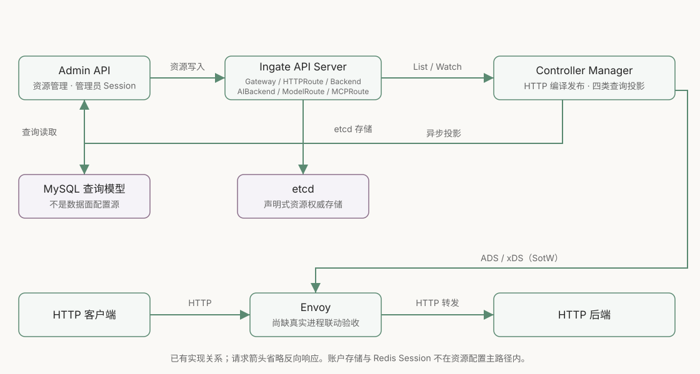
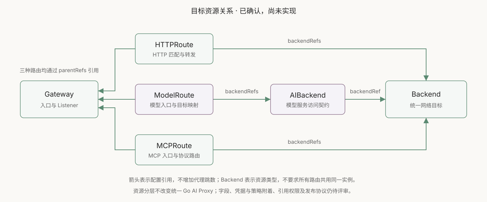
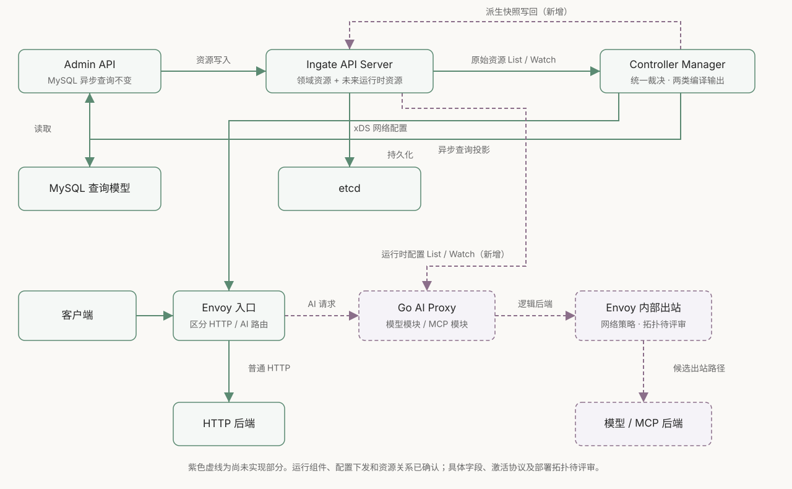
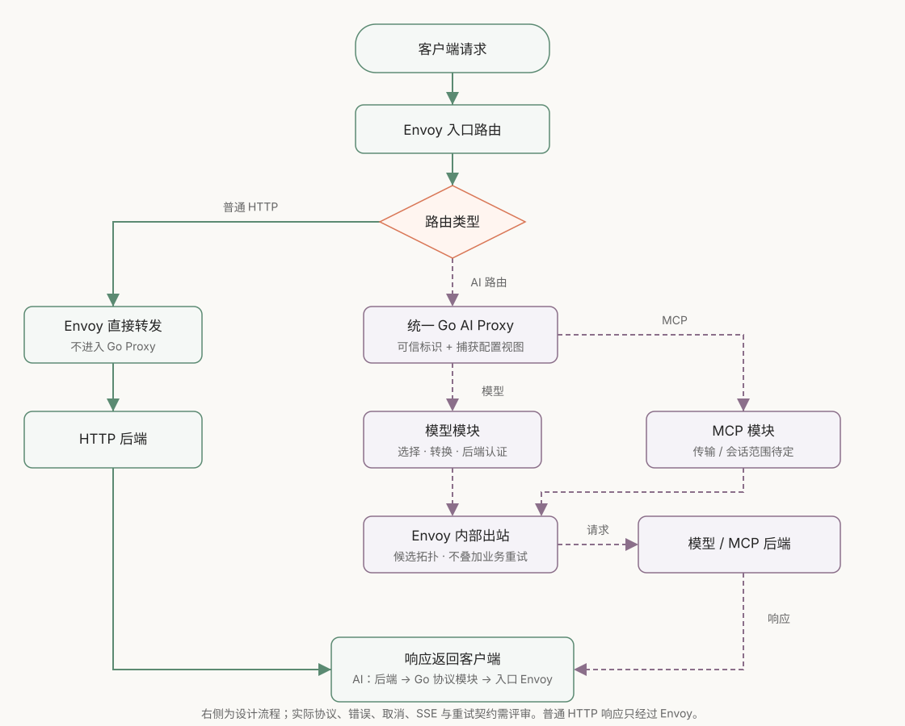
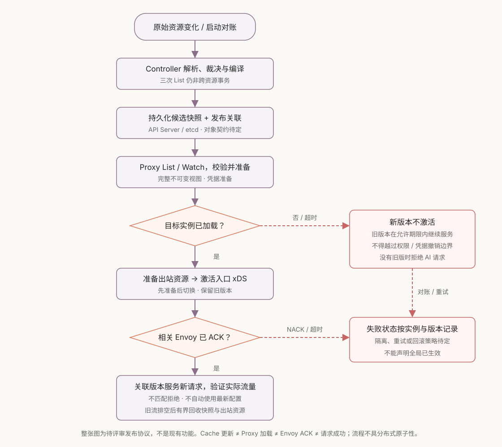

Ingate API 网关现状与 AI 网关设计图
2026-10-10 · 当前源码 56205b84321c · 方向已确认，AI 契约与实现尚未完成
已确认：模型与 MCP 使用统一 Go AI Proxy；Controller 编译后通过 API Server 向 Go 下发配置，Envoy 继续使用 xDS。资源分为 Gateway、HTTPRoute、ModelRoute、AIBackend、MCPRoute、Backend；普通 HTTP 不进入 Go。
文字依据与评审边界见 0010 决策；当前完成度与测试证据见 API 网关评估。以下 SVG 为独立源文件，无脚本、在线字体或外部渲染服务，可离线查看。
当前 HTTP 主路径已实现，真实整链路仍待验收
API Server 保存三种资源；Controller 裁决后发布完整 xDS，同时异步维护 MySQL 查询投影。管理端账户数据库和 Redis Session 未在此展开。

三种路由共享网络 Backend，模型服务契约独立定义
资源关系已确认，字段与实现尚未完成。箭头表示引用，不是请求转发：三种路由通过 parentRefs 引用 Gateway；ModelRoute 经 AIBackend 引用 Backend，HTTPRoute 和 MCPRoute 直接引用 Backend。图中的 Backend 表示统一资源类型，不要求所有业务共用同一个实例。

Go 订阅协议配置，Envoy 接收网络配置
紫色虚线为新增设计。Go 经 Envoy 内部出站访问后端是候选拓扑，部署形态、可信标识和资源字段仍待评审；图中的两个 Envoy 角色可以属于同一进程。

模型与 MCP 共用运行组件，分别处理协议
普通 HTTP 保持原路径。AI 请求捕获配置视图，进入独立协议模块；响应经该模块和入口 Envoy 返回，取消与背压需要全程传播。协议范围尚未选定。

候选发布流程先准备，再切换，最后排空回收
整张图均是待评审发布协议。初次配置缺失时拒绝 AI 请求；加载失败、NACK 或超时不能标记全局已生效。Watch 恢复、撤销、实例准入与回滚详见决策文档。
